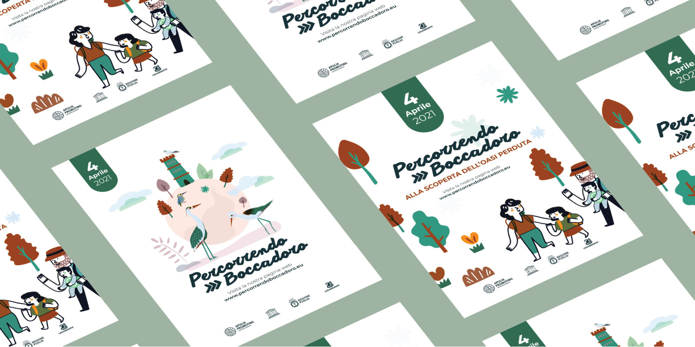
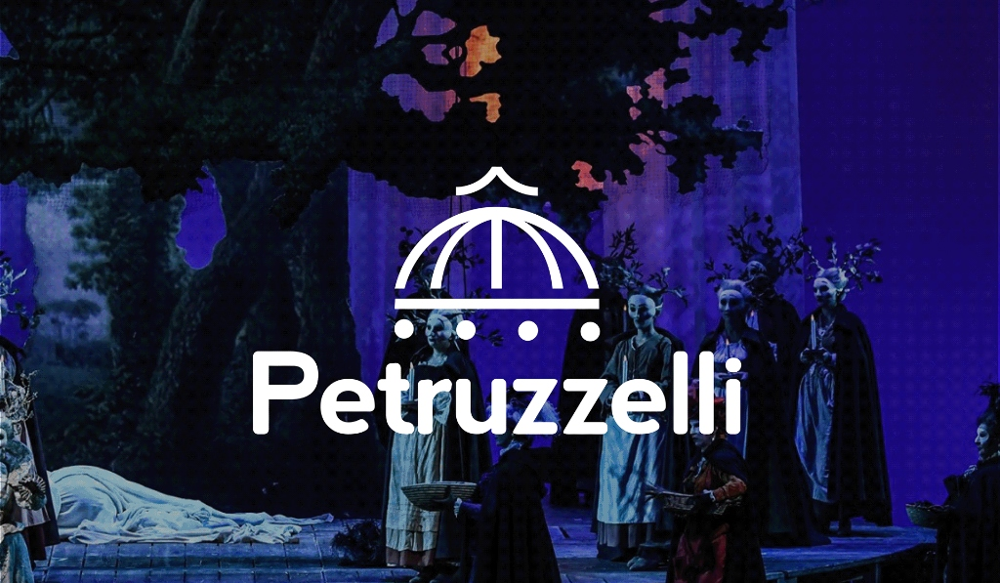

Patricia Garcia
Graphic & UI/UX Designer
bridging Design & Code
Design, codice e qualche altra ossessione creativa. Creo identità, interfacce ed esperienze digitali che danno forma alle idee.
bridging Design & Code
Design, codice e qualche altra ossessione creativa. Creo identità, interfacce ed esperienze digitali che danno forma alle idee.
Ciao, sono Paty, una graphic designer che si muove tra design e codice.
Nel mio lavoro quotidiano mi occupo di UI/UX e web design, progettando esperienze digitali chiare, intuitive e funzionali, con un approccio centrato sulle persone e attenzione ai loro bisogni.
Parallelamente porto avanti Bypatdesigner, il mio progetto freelance, dove seguo i progetti dall'identità visiva alla realizzazione di siti e interfacce, unendo design e codice.
Amo studiare, sperimentare e imparare attraverso tentativi ed errori. Per questo continuo a formarmi nello sviluppo software, dal front-end al back-end, con l'obiettivo di costruire un profilo ibrido tra UX design e sviluppo.


Una selezione di progetti
Esplora il lavoroRicerca, architettura dell’informazione, wireframe e prototipi. Parto dalle persone per progettare interfacce comprensibili e piacevoli da usare.
Identità visive e siti web con una direzione precisa. Tipografia, colore e composizione lavorano insieme per raccontare il tuo progetto.
Dal prototipo al browser: interfacce responsive, accessibili e curate anche nelle interazioni, con HTML, CSS e JavaScript.
Modellazione, materiali ed esplorazioni con nuovi strumenti. Un laboratorio per trovare prospettive e linguaggi visivi diversi.
Ascoltare e comprendere
Esploro il contesto, ascolto le persone e analizzo bisogni e obiettivi per capire quali problemi vale davvero la pena risolvere.
Mettere a fuoco
Organizzo le informazioni raccolte, individuo le priorità e definisco una direzione chiara da cui partire.
Dare forma alle idee
Esploro soluzioni, progetto flussi e interfacce e realizzo prototipi, cercando il giusto equilibrio tra estetica e funzionalità.
Provare e migliorare
Verifico ciò che funziona, raccolgo feedback e perfeziono le soluzioni. Perché un buon progetto non nasce perfetto: migliora nel tempo.